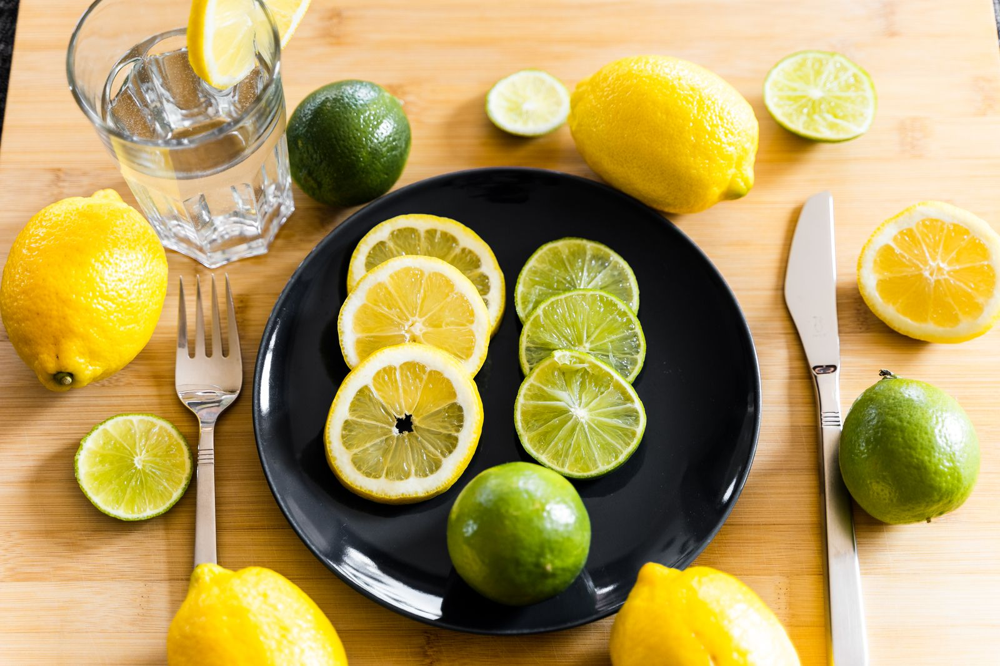

Rượu có thể khiến dễ buồn ngủ nhưng không phải cách tạo giấc ngủ tốt; tác động phụ thuộc lượng uống và bối cảnh. Nó cũng liên quan nhiều nguy cơ sức khỏe. Không có cơ sở gọi một số ly cố định là hoàn toàn an toàn hoặc có lợi cho hormone.
Tình huống minh họa: Mạch và điểm ngủ xấu sau một cuộc gặp có rượu không cho biết T giảm bao nhiêu. Dùng dữ liệu để xem thói quen và cảm giác, không chuyển mỗi ly thành mức tổn hại cố định.
Vì sao dễ buồn ngủ sau uống rượu không đồng nghĩa ngủ tốt?
Cảm giác an thần và một đêm có cấu trúc ngủ ổn định là hai việc khác nhau. Sau uống, bạn có thể dễ buồn ngủ nhưng vẫn có giấc ngủ gián đoạn hoặc thấy kém tỉnh táo hôm sau. Mức tác động thay đổi theo lượng, thời điểm, cơ địa và những chất dùng cùng; không nên hứa một quy tắc giờ uống sẽ xóa hết rủi ro.

Rượu cũng có thể làm khó duy trì kế hoạch tập và dinh dưỡng qua những hành vi đi kèm: ngủ muộn, ăn khác thường hoặc tập khi chưa hồi phục. Khi xem một biểu đồ nhịp tim cao sau cuộc gặp có đồ uống, đó là bối cảnh đáng ghi nhận, không phải phép đo trực tiếp tác động lên testosterone hay tinh hoàn.
WHO nhấn mạnh nguy cơ sức khỏe rộng hơn, không chỉ điểm phục hồi trên đồng hồ. Việc một chỉ số trở lại nền không có nghĩa mọi nguy cơ đã hết. Nếu muốn giảm, mục tiêu thực tế có thể là đổi sang đồ không cồn hoặc tạo những dịp gặp không xoay quanh uống. Người có triệu chứng cai hoặc khó kiểm soát lượng dùng cần hỗ trợ y tế phù hợp thay vì tự áp một thử thách dừng đột ngột. 1 2
Giấc ngủ là một cấu trúc thay đổi trong đêm
Giấc ngủ gồm NREM và REM. NREM có các giai đoạn N1, N2 và N3; thiết bị thường gộp N1 và N2 thành “ngủ nông”. N3 được gọi là ngủ sâu hay ngủ sóng chậm. Các giai đoạn lặp lại thành chu kỳ, nhưng không phải chiếc đồng hồ cứ đúng 90 phút lại đổi trạng thái. Thời lượng và cấu trúc có thể khác nhau giữa người, theo tuổi và giữa các đêm.
Ngủ sâu thường tập trung hơn ở phần đầu đêm, còn REM thường dài hơn về gần sáng. Điều đó giúp giải thích vì sao chỉ xem tổng số giờ chưa kể hết câu chuyện. Tuy nhiên, không thể quy giờ ngủ sâu cố định thành 22 giờ–2 giờ cho mọi lịch sinh hoạt, hoặc cho rằng mỗi phút ngủ nông là thời gian bị lãng phí. N2 là thành phần bình thường, quan trọng của giấc ngủ.
Các nghiên cứu về trí nhớ, nội tiết và phục hồi xem xét nhiều quá trình tương tác. Không nên chia quá cứng thành “ngủ sâu chỉ sửa cơ, REM chỉ sửa não”. Cũng không thể chuyển kết quả về sóng não hoặc động vật sang một mục tiêu phần trăm bắt buộc trên đồng hồ. Điều đáng theo dõi là cơ hội ngủ đủ, mức tỉnh táo và những triệu chứng ảnh hưởng cuộc sống.
Điện não và cảm biến chuyển động không nhận diện cùng một dấu hiệu
Phân loại giấc ngủ lâm sàng dựa trên tổ hợp đặc điểm như hoạt động điện não, mắt và cơ, thay vì chỉ mức nằm yên. Điều này giải thích vì sao một người có thể thức yên trong lúc đọc mà đồng hồ chưa phân biệt đúng. Ngược lại, một chuyển động ngắn không luôn có nghĩa đã thức hoàn toàn và nhớ được sự kiện đó.
Khi đọc một nghiên cứu xác thực thiết bị, cần xem nó so với tiêu chuẩn nào và đo kết quả gì. Độ nhạy nhận ra ngủ khác với khả năng nhận đúng lúc thức; cả hai cũng khác độ chính xác phân loại từng giai đoạn. Một tỷ lệ tốt cho “ngủ hay thức” không được dùng thay cho tỷ lệ nhận đúng REM hoặc N3, và kết quả ở người khỏe mạnh không tự áp cho người có rối loạn ngủ. 3 4
Testosterone: từ tín hiệu điều hòa đến kết quả xét nghiệm
Sản xuất testosterone chịu điều hòa qua vùng dưới đồi, tuyến yên và tinh hoàn. LH là một tín hiệu quan trọng tới tế bào sản xuất hormone, trong khi các cơ chế phản hồi giúp điều phối hệ thống. Đây là một mạng tương tác, không phải hai công tắc “cortisol bật thì testosterone tắt”. Bệnh, thiếu năng lượng, thuốc và thời điểm lấy mẫu đều có thể ảnh hưởng kết quả.
Trong máu, testosterone tồn tại ở các dạng gắn protein và dạng tự do. Total T và free T trả lời những câu hỏi liên quan nhưng không giống nhau; SHBG có thể ảnh hưởng cách diễn giải. Vì vậy, không nên dùng khoảng tham chiếu của một labo hoặc một phương pháp làm tiêu chuẩn tuyệt đối cho mọi trường hợp.
Hướng dẫn Endocrine Society yêu cầu triệu chứng phù hợp và mức thấp được xác nhận bằng xét nghiệm đáng tin cậy, thường gồm lặp lại buổi sáng. Bác sĩ có thể xem xét LH, FSH hoặc những thông tin khác để tìm nguyên nhân khi cần. Mục tiêu không phải đẩy mọi nam giới tới đầu trên khoảng tham chiếu. Cần nói rõ kế hoạch có con, vì testosterone ngoại sinh có thể ức chế sinh tinh và không phải giải pháp tự dùng cho người đang mong có con.
Vai trò LH, FSH và hai nhiệm vụ khác nhau của tinh hoàn
Tinh hoàn vừa tạo hormone vừa tham gia sinh tinh, với các loại tế bào và tín hiệu điều hòa khác nhau. LH hỗ trợ hoạt động tế bào Leydig liên quan sản xuất testosterone; FSH tham gia điều hòa môi trường hỗ trợ sinh tinh qua tế bào Sertoli. Mối tương tác này giải thích vì sao một chỉ số testosterone không đủ để mô tả toàn bộ khả năng sinh sản.
Testosterone thuộc nhóm hormone steroid có nguồn gốc từ cholesterol, nhưng quy trình sản xuất được điều hòa chứ không tăng tuyến tính theo cholesterol ăn vào. Tương tự, đưa testosterone từ bên ngoài vào có thể làm thay đổi tín hiệu phản hồi và giảm kích thích sinh tinh. Cảm giác mạnh hơn hoặc nồng độ tăng không bảo đảm mục tiêu có con được hỗ trợ; hai mục tiêu cần được thảo luận rõ khi quyết định điều trị. 5 6 7 8
Bảng đối chiếu để đọc đúng thông tin
| Giai đoạn | Cách hiểu | Điều không nên suy ra |
|---|---|---|
| N1 | Chuyển tiếp từ thức sang ngủ | Thời gian hoàn toàn vô ích |
| N2 | Thành phần bình thường của giấc ngủ NREM | Phải chuyển hết thành N3 |
| N3 | Ngủ sóng chậm, thường nhiều hơn đầu đêm | Một tỷ lệ tối ưu bắt buộc cho mọi tuổi |
| REM | Giai đoạn thường dài hơn về gần sáng | Một màu biểu đồ xác định chính xác sức khỏe tâm lý |
Ứng dụng thực tế: làm gì và đánh giá bằng cách nào?
Nếu muốn xem tác động cá nhân, thử giảm hoặc tránh uống và ghi chất lượng ngủ, cảm giác sáng hôm sau cùng lịch tập. Không dùng đồ uống có cồn như phần bắt buộc của phục hồi hoặc chế độ ăn lành mạnh.
- Nhìn toàn bộ khẩu phần. Tính cả thực phẩm, đồ uống và viên bổ sung, thay vì chỉ một chất nổi bật trong quảng cáo.
- Gắn với hoàn cảnh thật. Khối lượng tập, khả năng nấu ăn, điều kiện kinh tế và bệnh nền quyết định tính khả thi.
- Đổi một việc có thể duy trì. Ví dụ, chuẩn bị bữa phù hợp hơn hoặc xem lại thành phần chồng lặp; không coi mức hạn chế nghiêm ngặt là thành tích sức khỏe.
- Đánh giá đúng kết quả. Cảm giác và khả năng sinh hoạt khác với kết quả xét nghiệm hay sinh sản; khi cần hãy trao đổi mục tiêu theo dõi phù hợp.
Khi nào nên tìm hỗ trợ?
Một đêm nhịp tim cao không cho biết testosterone đã giảm bao nhiêu. Không quy đổi số ly thành phần trăm hormone hay tổn hại cố định.
Nếu khó kiểm soát lượng uống hoặc từng có triệu chứng cai, tìm hỗ trợ y tế để giảm một cách phù hợp.
Nguồn tham khảo và phạm vi hỗ trợ
-
WHO — Alcohol — Public health evidence summary. Hỗ trợ: Nguy cơ sức khỏe từ rượu; không có mức uống hoàn toàn không rủi ro.
-
NHLBI — Healthy Sleep Habits — Public health guidance. Hỗ trợ: Thói quen ngủ và lịch sinh hoạt.
-
NHLBI — Sleep Phases and Stages — Public health guidance. Hỗ trợ: NREM, REM và thay đổi theo tuổi.
-
Schutte-Rodin et al. (2021) — Evaluating consumer and clinical sleep technologies: an American Academy of Sleep Medicine update — Professional society review. Hỗ trợ: Giới hạn đánh giá và xác thực công nghệ theo dõi giấc ngủ.
-
Bhasin et al. (2018) — Testosterone Therapy in Men With Hypogonadism: An Endocrine Society Clinical Practice Guideline — Clinical practice guideline. Hỗ trợ: Triệu chứng cộng xét nghiệm buổi sáng lặp lại; tránh testosterone khi muốn có con.
-
Endocrine Society — Hypogonadism in Men — Professional patient guidance. Hỗ trợ: Chẩn đoán thiếu testosterone và giới hạn xét nghiệm.
-
AUA/ASRM — Diagnosis and treatment of infertility in men: guideline part II — Clinical practice guideline. Hỗ trợ: Giới hạn bằng chứng của chất bổ sung và tác động testosterone đến sinh sản.
-
OpenStax Anatomy and Physiology 2e — Gonadal and Placental Hormones — Physiology textbook. Hỗ trợ: Điều hòa hormone sinh dục và phân biệt các chức năng tuyến sinh dục.
Cập nhật nội dung và nguồn: 26/10/2026. Nội dung giáo dục; chưa có xác nhận duyệt bởi bác sĩ.